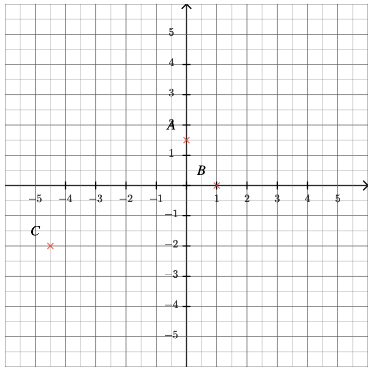
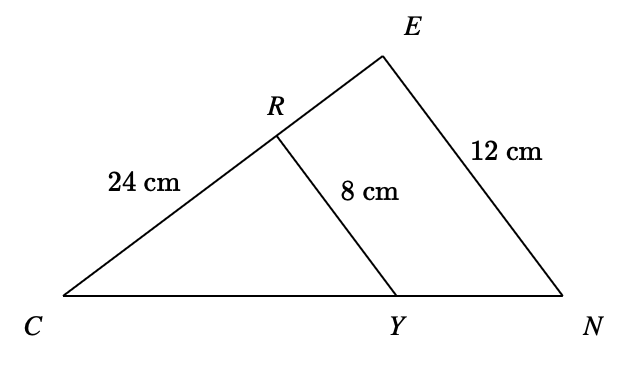
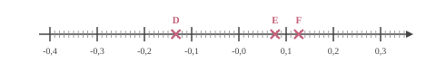
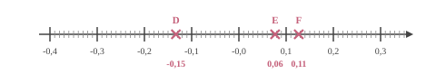
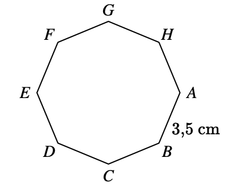

$A=-7+6(-8c-2)$ $A=-7+6\times (-8c)+6\times (-2)$ En réduisant l'expression, on obtient : $A=$ ${\color{#8B3C52}\boldsymbol{-48c-19}}$.
03
Question
Déterminer les coordonnées respectives des points $A$, $B$ et $C$.

Les coordonnées respectives des points sont : $A({\color{#8B3C52}\boldsymbol{0}};{\color{F15929}\boldsymbol{1{,}5}})$, $C({\color{#8B3C52}\boldsymbol{-4{,}5}};{\color{F15929}\boldsymbol{-2}})$ et $B({\color{#8B3C52}\boldsymbol{1}};{\color{F15929}\boldsymbol{0}})$.
04
Question
$STU$ est un triangle rectangle en $S$ dans lequel
$ST=9$ et $SU=\sqrt{3}$.
Calculer la valeur exacte de $TU$ .
On utilise le théorème de Pythagore dans le triangle $STU$, rectangle en $S$.
On obtient :
$\begin{aligned}
ST^2+SU^2&=TU^2\\
TU^2&=ST^2+SU^2\\
TU^2&=\sqrt{3}^2+9^2\\
TU^2&=3+81\\
TU^2&=84\\
TU&={\color{#8B3C52}\boldsymbol{\sqrt{84}}}
\end{aligned}$
En simplifiant, on obtient : $TU = 2\sqrt{21}$
La solution de l'équation $\dfrac{4x}{5}=-3$ est ${\color{#8B3C52}\boldsymbol{-\dfrac{15}{4}}}$.
03
Question
Dans le triangle $ABC$ rectangle en $B$, on sait que $\widehat{A} = 26^\circ$.
Calculer $\widehat{C}$.
On sait que la somme des angles d'un triangle est égale à $180^\circ$.
Donc, dans le triangle $ABC$, on a :
$\widehat{A} + \widehat{B} + \widehat{C} = 180^\circ$.
Or, comme le triangle est rectangle en $B$, on a $\widehat{B} = 90^\circ$.
Donc, $26^\circ + 90^\circ + \widehat{C} = 180^\circ$.
D'où $\widehat{C} = 180^\circ - 90^\circ - 26^\circ = 90^\circ - 26^\circ = {\color{#8B3C52}\boldsymbol{64}}^\circ$.
04
Question
Sur la figure ci-dessus, dans le triangle $CEN$, les droites $(EN)$ et $(YR)$ sont parallèles. Déterminer la longueur $CE$.

Dans le triangle $CEN$, les droites $(EN)$ et $(YR)$ sont parallèles.
D'après le théorème de Thalès, on a :
$\dfrac{CE}{CR} =
\dfrac{EN}{YR}$.
En remplaçant par les longueurs, on obtient :
$\dfrac{CE}{CR} = \dfrac{12}{8}=1{,}5$.
On en déduit que :
$CE = 1{,}5 \times 24 = {\color{#8B3C52}\boldsymbol{36}}$ cm.
01
Question
Après une augmentation de $2~\%$ le prix de mon ordinateur est maintenant $1\,238{,}28$ €. Calculer son prix avant l'augmentation.
Une augmentation de $2$ % revient à multiplier par $100~\% + 2~\%=102~\% = 1{,}02$. Pour retrouver le prix initial, on va donc diviser le prix final par $1{,}02$. $1\,238{,}28\div1{,}02 = 1\,214$ Avant l'augmentation le prix de mon ordinateur était de ${\color{#8B3C52}\boldsymbol{1\,214}}$€.
02
Question
Donner l'abscisse des pour $D$, $E$ et $F$.


$\ D $ $(-0{,}15)$ $\ E $ $(0{,}06)$ $\ F $ $(0{,}11)$
03
Question
Calculer le périmètre du octogone régulier $ABCDEFGH$ représenté ci-dessous :

Le polygone a $8$ côtés de longueur $3{,}5$ cm.
Le périmètre est donc égal à :
$8 \times 3{,}5 = {\color{#8B3C52}\boldsymbol{28}}$ cm.
04
Question
Compléter à l'aide des longueurs $WV$, $WX$ et $VX$ : $\cos\left(\widehat{WVX}\right)=$$\dfrac{\ldots}{\ldots}$
$WVX$ est rectangle en $W$ donc : $\cos\left(\widehat{WVX}\right)={\color{#8B3C52}\boldsymbol{\dfrac{WV}{VX}}}$